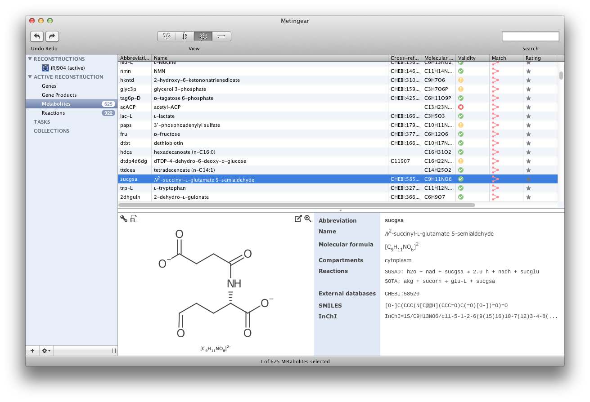

Metingear is an open source desktop application for creating and curating genome scale metabolic networks with chemical structure.
Creating a high-quality genome-scale metabolite reconstruction requires meticulous manual annotation and can take substantial time to complete. Metingear simplifies the process of manual annotation providing a higher-quality and correctly annotated reconstruction in less time.
Download the latest version
Download Metingear
more
Acknowledgement
Metingear was created by members of the Cheminformatics and Metabolism group at the EMBL, European Bioinformatics Institute (EMBL-EBI). The project is funded by EMBL, Unilever and the BBSRC
Screenshots
Example Reconstructions
For quick start, the Metingear binary format is recomended.| Model | Organism | References | SBML (lvl 2 ver 4) | Metingear binary |
|---|---|---|---|---|
| iYO844 | B. subtilis | Oh et al. 2007 | iYO844.xml | iYO844.mr |
| iBsu1103 | B. subtilis 168 | Henry et al. 2009 | iBsu1103.xml | iBsu1103.mr |
| iJR904 | E. coli K-12 | Reed et al. 2003 | iJR904.xml | iJR904.mr |
Key Features
Importing existing models
Import reconstructions from:
- Systems Biology Markup Language (SBML)
- KEGG Markup Language (KGML)
- Microsoft ® Excel *
Include nucleotide and protein sequence information from:
- European Nucleotide Archive (ENA)
- FASTA format files
Metabolite cross-referencing
Metingear provides easily resolution of cross-references
- import and export Resource Description Framework (RDF) annotations from SBML
- extract references from free text, such as notes and comments
- search multiple resources using the name of a metabolite
- resource inference on manually entered identifiers
Chemical structure
- automatically fetch a structure using added cross-references
- import a structure diagram from Chemical Markup Language (CML), MDL V2000/V3000, International Chemical Identifier (InChI) and Simplified molecular-input line-entry system (SMILES).
- use an assisted drawing tool to create structures for repetitive metabolites (e.g. short polypeptides)
- export chemical structures to a Structured Data File (SDF) or as InChI annotations in SBML
Data resources
Simplified interaction with:
- Chemical Entities of Biological Interest (ChEBI)
- KEGG Compound
- MetaCyc
- PubChem **
- Human Metabolome Database (HMDB)
- LIPID MAPs
- UniProt
To improve speed, users can load resources into a searchable local index. The index dramatically improves speed and allows customised searching, such as chemical substructure. All services are link to identifiers so once an identifier is added Metingear can identify if any services are available and which services can be used.
Manuals
Screen Casts
Annotating an SBML model
Before you start you will want to check out the written tutorial with details of what you need to do before you start. Alternatively you can watch the before you begin video.Other Projects
- Model Development Kit (MDK) - the domain model behind Metingear
- Chemistry Development Kit (CDK) - used to manipulate chemical data
- BioJava3 - used to manipulate sequence data
* requires column selection
** currently web-service only